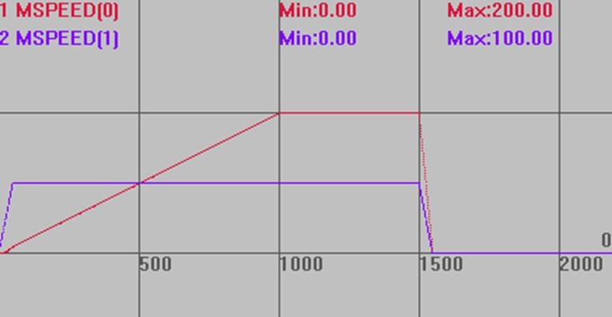
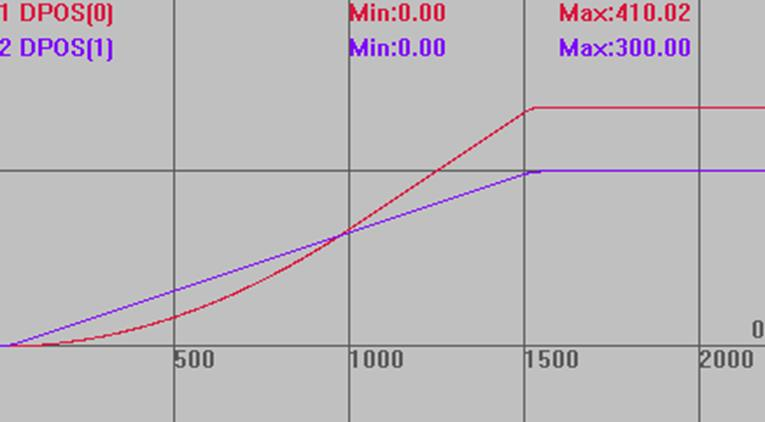
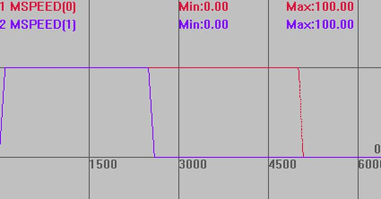
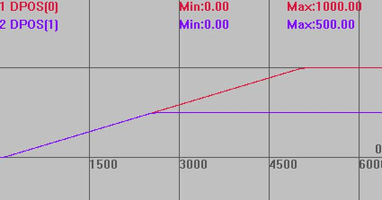

|
类型 |
轴参数 |
|
描述 |
CONNECT连接的速度，默认值1000000。
用于定义连结率从0到设置倍率的改变时间，ratio/秒，见例一。 设置值如果不能远大于CONNECT连接比例的话，实际连接比例会减小，见例一位移曲线图。 当设置为0时，根据跟随轴的速度/加速度参数来跟踪连接（当速度不够高时可能导致要持续运动一段时间才能结束）。 |
|
语法 |
CLUTCH_RATE= value |
|
适用控制器 |
通用 |
|
例子 |
例一 ATYPE=1,1 DPOS=0,0 UNITS=100,100 SPEED=100,100 ACCEL=1000,1000 DECEL=1000,1000 CLUTCH_RATE=1 '设置连接速度为 1ratio/s TRIGGER '自动触发示波器 CONNECT(2,1) AXIS(0) '连接倍率为2，需要2秒建立连接 MOVE(300) AXIS(1) '运动轴1，轴0跟随
速度曲线，连接时间根据连接比例和CLUTCH_RATE确定。 MSPEED(0)垂直刻度200 MSPEED(1)垂直刻度200  位移曲线，CLUTCH_RATE值较小，实际运动比例并没有达到2:1 DPOS(0)垂直刻度300 DPOS(1)垂直刻度300 
例二 DPOS=0,0 ATYPE=1,1 UNITS=100,100 SPEED=100,100 ACCEL=500,500 DECEL=500,500 CLUTCH_RATE = 0 '根据跟随轴的速度/加速度来跟踪连接，不一定同步 TRIGGER '自动触发示波器 CONNECT(2,1) AXIS(0) '此时连接时间根据跟随轴速度加速度确定，本例中0.2s MOVE(500)AXIS(1)
速度曲线 MSPEED(0)垂直刻度100 MSPEED(1)垂直刻度100 
位移曲线 DPOS(0)垂直刻度1000 DPOS(1)垂直刻度1000  |
|
相关指令 |